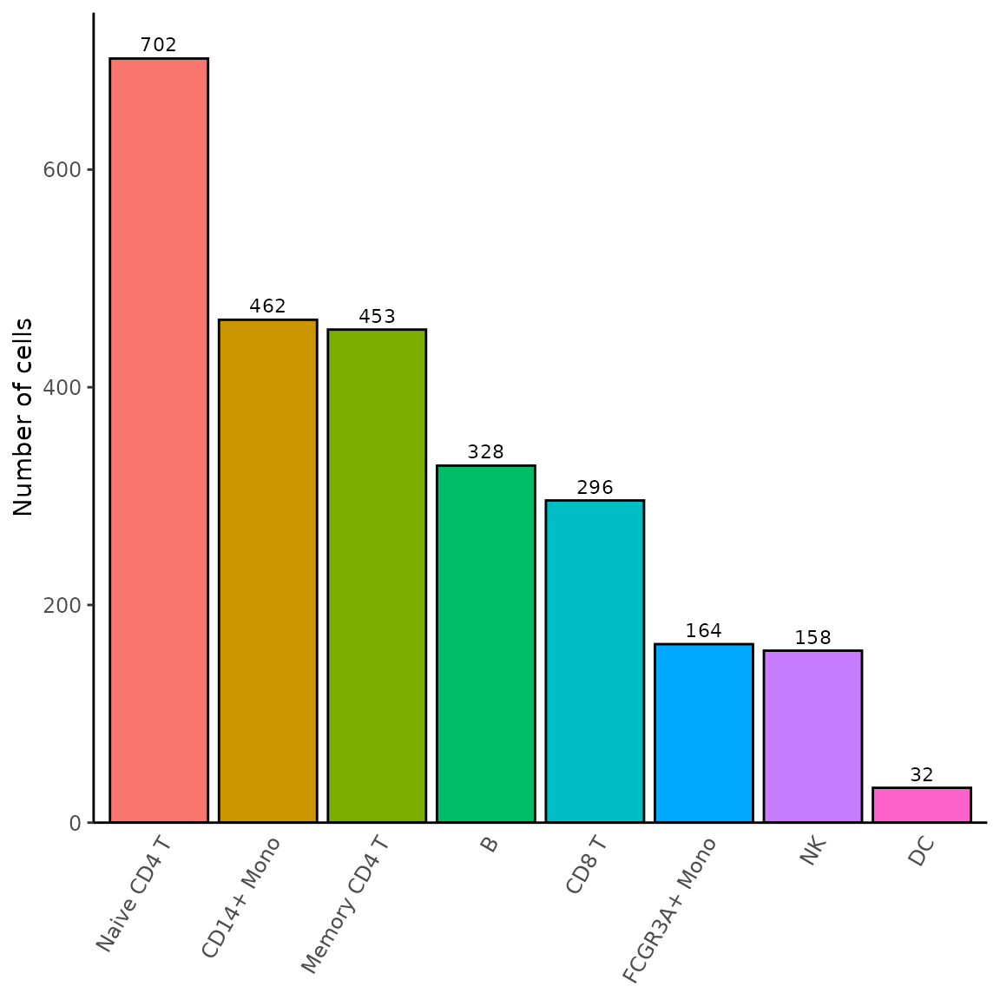
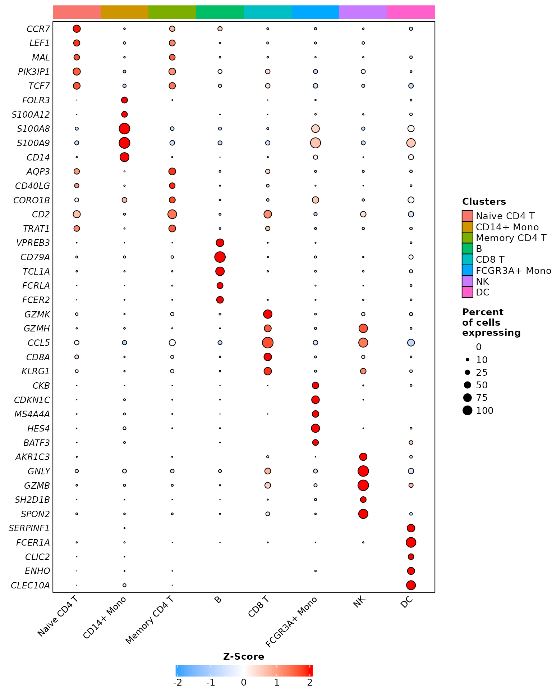

Introduction
This tutorial will guide you through the main functions of the
RightOmicsTools package, designed to provide complementary
tools to the analysis of single-cell RNA-seq data, such as plotting,
data manipulation, and more. The package is still under development, and
new functions will be added in the future.
Installation
If you are using Windows, you first need to make sure you have Rtools
installed, as some dependencies needed for RightOmicsTools
require compilation. You may download Rtools from here.
You may install the package from GitHub using the
devtools package, which, if you don’t have it, may be
installed using the following command:
install.packages("devtools")Once installed, you may install RightOmicsTools using
the following command:
devtools::install_github("Alexis-Varin/RightOmicsTools")Data loading
For this tutorial, we will use the pbmc3k dataset, which
contains single-cell RNA-seq data from peripheral blood mononuclear
cells (PBMCs), and made available by 10X
Genomics.
We will also build on the Seurat package’s
pbmc3k tutorial to preprocess it, available for reference
here.
Let’s start by loading all the packages we will be using in this vignette:
Next, we will load the pbmc3k dataset using our first
function from RightOmicsTools, Right_Data,
which handles all data preparation for us, and check its contents:
# Checking available datasets
Right_Data(list.datasets = TRUE)
# Loading the data
pbmc3k <- Right_Data("pbmc3k")
# Checking the contents of the object
pbmc3k
colnames(pbmc3k@meta.data)#> Available datasets:
#> "pbmc3k" a Seurat v4 object of 2700 cells by 13714 genes#> An object of class Seurat
#> 13714 features across 2700 samples within 1 assay
#> Active assay: RNA (13714 features, 2000 variable features)
#> 2 layers present: counts, data
#> 1 dimensional reduction calculated: umap#> [1] "orig.ident" "nCount_RNA" "nFeature_RNA"
#> [4] "seurat_annotations" "treatment"Since the object seems to contain a ‘data’ layer, a UMAP reduction
and annotations, and we are unsure to what extent is has been
preprocessed and processed, we will also test another function from
RightOmicsTools, Right_DietSeurat,
which is a reworked version of DietSeurat,
and will remove all the layers and slots from the object, leaving only
the counts layer from the RNA assay. We will also remove all meta.data
columns except for the ‘orig.ident’ metadata to truly start anew. Right_DietSeurat
is highly customizable, check the documentation for more
information:
# Reducing the object to the counts layer and the 'orig.ident' metadata
pbmc3k <- Right_DietSeurat(pbmc3k, idents = "orig.ident")
# Checking the contents of the object
pbmc3k
colnames(pbmc3k@meta.data)#> An object of class Seurat
#> 13714 features across 2700 samples within 1 assay
#> Active assay: RNA (13714 features, 0 variable features)
#> 1 layer present: counts#> [1] "orig.ident" "nCount_RNA" "nFeature_RNA"Data preprocessing
Quality control and cell filtering
We will now move on to preprocessing. We start by calculating the percentage of mitochondrial genes and plot these results alongside the number of genes (nFeature_RNA) and counts (nCount_RNA) per cell:
# Calculate percentage of mitochondrial genes
pbmc3k[["percent.mt"]] <- PercentageFeatureSet(pbmc3k, pattern = "^MT-")
# Plot QC
ggplot(pbmc3k@meta.data, aes(x = nCount_RNA, y = nFeature_RNA, col = percent.mt)) +
geom_point(size=0.5) +
scale_color_gradientn(colors=c("black","blue","green3","yellow3","red3")) +
ggtitle("pbmc3k QC metrics") +
labs(x = "Log10(counts)", y = "Log10(number of genes)", col = "% mito") +
scale_y_log10() +
scale_x_log10() +
theme_bw() +
theme(panel.border = element_blank(),
panel.grid.major = element_blank(),
panel.grid.minor = element_blank(),
axis.line = element_line(colour = "black"))
Based on the plot above, we will filter out cells with more than 10% mitochondrial genes as well as cells with less than 400 or more than 2500 genes:
# Filter cells
pbmc3k <- subset(pbmc3k, subset = nFeature_RNA > 400 &
nFeature_RNA < 2500 &
percent.mt < 10)
# Checking the contents of the object
pbmc3k#> An object of class Seurat
#> 13714 features across 2595 samples within 1 assay
#> Active assay: RNA (13714 features, 0 variable features)
#> 1 layer present: countsNormalization
Now that we have filtered the cells, we will move on to the next
step, which is normalizing, scaling the data and identifying highly
variable genes. For convenience, we use the same parameters as in the
Seurat package tutorial:
# Normalizing the data with default parameters
pbmc3k <- NormalizeData(pbmc3k)
# Find highly variable genes with default parameters
pbmc3k <- FindVariableFeatures(pbmc3k)
# Scaling all genes, by default it only scales the variable features
pbmc3k <- ScaleData(pbmc3k, features = rownames(pbmc3k))Dimensionality reduction
Next, we will perform dimensionality reduction and unsupervised
clustering. We again use the same parameters as in the
Seurat package tutorial:
# Perform PCA
pbmc3k <- RunPCA(pbmc3k)
# Clustering
pbmc3k <- FindNeighbors(pbmc3k, dims = 1:10)
pbmc3k <- FindClusters(pbmc3k, resolution = 0.5)
# UMAP
pbmc3k <- RunUMAP(pbmc3k, dims = 1:10)Finally, we will plot the UMAP, which concludes the preprocessing steps:
# Plot UMAP
DimPlot(pbmc3k)
Interestingly, compared to the Seurat package tutorial,
we are missing the platelet cluster, which is likely due to the fact
that we have a more drastic cutoff for the number of genes per cell, at
400 versus 200. This is a good example of how the preprocessing steps
can influence the clustering results.
Downstream analysis
Markers
A growing number of methods exist to label single-cell clusters, from
using reference datasets with SingleR package or Azimuth, to querying
ChatGPT with GPTCelltype package, via using canonical
markers from the scientific literature. The vast majority of these
methods need a set of genes as input, and determining the most
differentially expressed genes (DEG) in each cluster is a common first
step.
For this purpose, we are going to use a function from
RightOmicsTools, Find_Annotation_Markers,
which is a wrapper function around FindMarkers.
It is designed by default to conveniently output a character vector of
the top 5 markers, chosen based on the highest average log fold change
in genes expressed in at least 25% of cells in each cluster, and with
mitochondrial, ribosomal and non-coding genes excluded, in order to
maximize the chances of finding canonical markers in an unsupervised
manner. It also provides many more parameters which can be used to
tailor the function to your specific needs:
# Top 5 markers for each cluster, we will name each marker with cluster identity
annotation.markers <- Find_Annotation_Markers(pbmc3k,
name.features = TRUE)
# Display markers for each cluster
annotation.markers#> Finding markers for cluster 0 against all other clusters
#> Finding markers for cluster 1 against all other clusters
#> Finding markers for cluster 2 against all other clusters
#> Finding markers for cluster 3 against all other clusters
#> Finding markers for cluster 4 against all other clusters
#> Finding markers for cluster 5 against all other clusters
#> Finding markers for cluster 6 against all other clusters
#> Finding markers for cluster 7 against all other clusters#> [1] "CCR7" "LEF1" "MAL" "PIK3IP1" "TCF7" "FOLR3"
#> [7] "S100A12" "S100A8" "S100A9" "CD14" "AQP3" "CD40LG"
#> [13] "CORO1B" "CD2" "TRAT1" "VPREB3" "CD79A" "TCL1A"
#> [19] "FCRLA" "FCER2" "GZMK" "GZMH" "CCL5" "CD8A"
#> [25] "KLRG1" "CKB" "CDKN1C" "MS4A4A" "HES4" "BATF3"
#> [31] "AKR1C3" "GNLY" "GZMB" "SH2D1B" "SPON2" "SERPINF1"
#> [37] "FCER1A" "CLIC2" "ENHO" "CLEC10A"These markers may then be directly used for plotting. Since the
Seurat package tutorial uses DoHeatmap,
we will compare it to its equivalent in RightOmicsTools, Cell_Heatmap,
which is reworked using the ComplexHeatmap package instead
of the ggplot2 package:
Cell_Heatmap(pbmc3k,
features = annotation.markers,
cluster.features = FALSE,
show.idents.legend = FALSE)Let’s compare it to Seurat package’s default heatmap
function:

While both heatmaps look similar aside from colors, which is on purpose with default parameters, Cell_Heatmap truly shines in complexity by offering more customization options, such as the possibility to cluster features, apply k-means, or split identities by another metadata…
Cell annotation
We will now annotate each cluster with its corresponding cell type and display the UMAP:
# Annotate clusters
new.cluster.ids <- c("Naive CD4 T", "CD14+ Mono", "Memory CD4 T",
"B", "CD8 T", "FCGR3A+ Mono", "NK", "DC")
names(new.cluster.ids) <- levels(pbmc3k)
pbmc3k <- RenameIdents(pbmc3k, new.cluster.ids)
# Add metadata to Seurat object
pbmc3k@meta.data$named_clusters <- pbmc3k@active.ident
# Plot UMAP with cell types
DimPlot(pbmc3k, label = TRUE) +
NoLegend()
Cell proportion
Following cell annotation, one often want to visualize the proportion
of each cell type. While using table
on the identities gives this information, it is often tedious to
organize these data for plotting; RightOmicsTools
introduces Barplot_Cell_Proportion,
which automates cell proportion and conveniently displays a bar plot,
with the possibility to group and/or split based on other metadata, and
many other parameters:
Barplot_Cell_Proportion(pbmc3k)
Other visualizations
We will conclude by showing the last two visualization functions; DotPlot_Heatmap,
which is a reworked version of DotPlot, also
built from the ComplexHeatmap package instead of the
ggplot2 package, and Grid_VlnPlot,
which is a stacked version of VlnPlot in a
square grid, both also offering many more options than their
Seurat package’s counterparts:
# We will disable some parameters to be as close as possible from Seurat's DotPlot
# Due to the number of features, we will also lower dots size and flip the axis
DotPlot_Heatmap(pbmc3k,
features = annotation.markers,
dots.size = 2,
cluster.features = FALSE,
cluster.idents = FALSE,
rotate.axis = TRUE)
Comparing it to Seurat package’s default dotplot
function:
# Seurat's DotPlot function doesn't work well with named features, we will remove names
DotPlot(pbmc3k,
features = unname(annotation.markers)) +
RotatedAxis() +
coord_flip()
And finally, the grid violin plot:
Grid_VlnPlot(pbmc3k,
features = annotation.markers)
Going further
Advanced data visualization
While we have shown the default parameters of most of the functions
of RightOmicsTools, there are many more options available
in each function; to explore the use cases of most of these, and to see
how far they can be customized, check the advanced
data visualization vignette.
Gene signatures from GSEA
Another interesting feature of RightOmicsTools is the
possibility to extract genes from pathways in the Gene Set Enrichment
Analysis (GSEA) database to create and visualize signatures. Check the
gene
signatures from GSEA vignette to learn more about the various usages
of this function.
Differentially expressed genes in pseudotime analysis
Finally, RightOmicsTools provides helper and
visualization functions to greatly speed up and facilitate differential
gene expression in pseudotime analysis with the tradeSeq
package, with a focus on a highly customizable heatmap visualization
function. Head over to the DEG
along pseudotime analysis vignette for an in-depth look at these
functions.